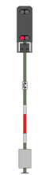
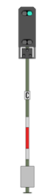

|
|
| Sie nähern sich dem Einfahrsignal des Bahnhofs Altenbeken. Drei Signalbilder sind möglich: |
 Halt:Halten Sie vor dem Signal und warten Sie auf Fahrt. Passen Sie ggf. die Bremskraft an (Bremskraft erhöhen, Bremskraft verringern) |
 Langsamfahrt mit
40km/h: Langsamfahrt mit
40km/h:Fahren Sie ab dem Signal bis in den Bahnhof maximal 40km/h. Zusätzlich erscheint hier noch ein "P". Das ist ein Richtungsanzeiger, der uns anzeigt, dass die Fahrt Richtung Paderborn geht. |
 Fahrt mit Streckengeschwindigkeit (hier immer noch 80km/h)Zusätzlich erscheint hier noch ein "P". Das ist ein Richtungsanzeiger, der uns anzeigt, dass die Fahrt Richtung Paderborn geht. |